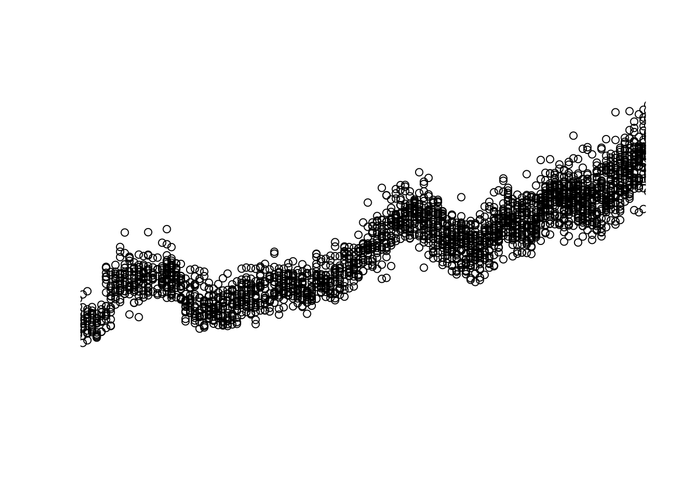
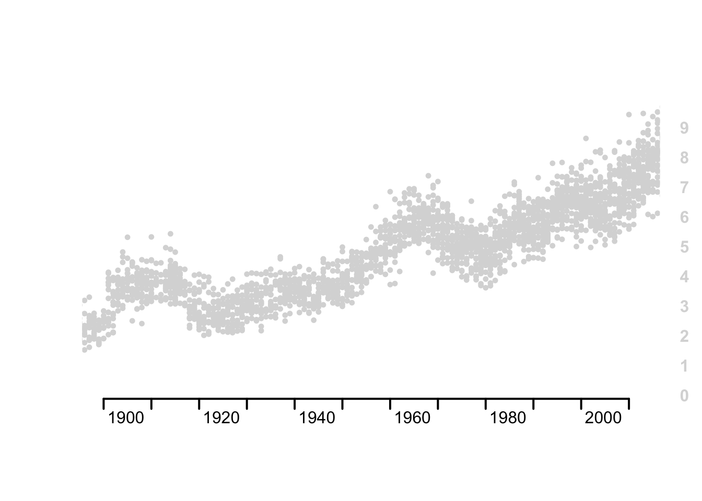

Lab 03 - Graphics
CPP 526: Foundations of Data Science I
This lab introduces core plotting functions in order to create customized graphics in R.
You can create a new R Markdown file, or download the LAB-03 RMD template:

Replicating NYT Graphics
For this lab you will replicate the following NYT Graphic as closely as possible.

Functions
You will likely use the following functions. Either
plot() or plot.new() and
plot.window(), as well as:
points()
gray()
axis()
title()
text()
mtext()
segments()
abline()
Data
The data comes from the Lahman baseball data package.
The Teams dataset contains season statistics for each
baseball team from the late 1800s onward. The graph reports average
strike-outs per game, which is calculated as ave.so
below:
library(Lahman)
data(Teams)
ave.so <- Teams$SO / Teams$G
Preprocessing
You will need only the average strike-outs per game, and the year variables:
ave.so <- Teams$SO / Teams$G # Average strike-outs per game each season
year <- Teams$yearIDIt is advisable to keep all of the variables together inside of a
data frame. Currently, ave.so is an active vector, but it
is not in the same data frame as the other variables.
Creating New Variables
To create a new variable inside of an existing data frame try:
data.frame.name$new.variable.nameFor example:
Teams$ave.so <- Teams$SO / Teams$GMake a mental note of the difference, as some functions (especially the data wrangling functions in the dplyr package) will require that all variables are contained within a single data frame.
summary(ave.so) %>%
pander() # pander() cleanly prints data| Min. | 1st Qu. | Median | Mean | 3rd Qu. | Max. | NA’s |
|---|---|---|---|---|---|---|
| 0.2727 | 3.516 | 5 | 4.972 | 6.287 | 10.13 | 16 |
Note: You don’t have to understand baseball to recreate the graphic.
Lab Instructions
Your task is to replicate as closely as possible the graphic published by the NYT.
The initial code provided below will help get you started.
1. Plot Average Strike-Outs by Year
Since the Lahman data is current but the NYT Graphic is
from 1900 to 2012, use xlim = c() to truncate the
years.
ave.so.min <- min( ave.so, na.rm=T )
ave.so.max <- max( ave.so, na.rm=T )
plot.new()
plot.window(xlim = c(1900, 2012),
ylim = c(ave.so.min,
ave.so.max)) # Specify dimensions
points(x = year,
y = ave.so) # Plot points
2. Modify the Aesthetics of Plotted Points
In order to replicate the aesthetics of the NYT graphic, we can
modify points().
plot.new()
plot.window(xlim = c(1900, 2012),
ylim = c(ave.so.min,
ave.so.max)) # Specify dimensions
points(x = year,
y = ave.so,
col = "gray85", # Color
pch = 16, # Shape
cex = 0.75) # Size
3. Replicate the Axes
You’ll need to modify your axes a bit further, but this should get you started.
plot.new()
plot.window(xlim = c(1900, 2012),
ylim = c(ave.so.min,
ave.so.max)) # Specify dimensions
points(x = year,
y = ave.so,
col = "gray85", # Color
pch = 16, # Shape
cex = 0.75) # Size
axis(side = 1, # Add x-axis
lwd = 2, # Line width
hadj = -0.1, # Horizontal label position
padj = -1, # Vertical label position
at = seq(from = 1900,
to = 2010,
by = 10)) # Specify tick label sequence
axis(side = 4, # Add y-axis
lwd = 0, # Remove axis line
las = 1, # Rotate labels
col.axis = "gray85", # Adjust label colors
at = seq(from = 0, # Specify axis values
to = 9,
by = 1),
font.axis = 2) # Set labels to bold
4. Continue to Replicate the Graphic
Use the above recommended functions and modifications to create as close a replication as possible.
Hints
You can often rely on internal documentation as well as the web.
Internal Documentation
If you need help looking up arguments remember these two helpful functions:
help()args()
For example:
args(abline)
help(mtext)External Message Boards
This lab assignment will push you to explore the nuances of these functions and their arguments. Don’t hesitate to use the web to overcome challenging function modifications.
- Include the language, i.e. “r”
- Include the function name, e.g.
text() - Concisely describe your intent, e.g. “allow text overflow”
How to Submit
Use the following instructions to submit your assignment, which may vary depending on your course’s platform.
Knitting to HTML
When you have completed your assignment, click the “Knit” button to
render your .RMD file into a .HTML report.
Special Instructions
Perform the following depending on your course’s platform:
- Canvas: Upload both your
.RMDand.HTMLfiles to the appropriate link - Blackboard or iCollege: Compress your
.RMDand.HTMLfiles in a.ZIPfile and upload to the appropriate link
.HTML files are preferred but not allowed by all
platforms.
Before You Submit
Remember to ensure the following before submitting your assignment.
- Name your files using this format: Lab-##-LastName.rmd and Lab-##-LastName.html
- Show both the solution for your code and write out your answers in the body text
- Do not show excessive output; truncate your output, e.g. with
function
head() - Follow appropriate styling conventions, e.g. spaces after commas, etc.
- Above all, ensure that your conventions are consistent
See Google’s R Style Guide for examples of common conventions.
Common Knitting Issues
.RMD files are knit into .HTML and other
formats procedural, or line-by-line.
- An error in code when knitting will halt the process; error messages will tell you the specific line with the error
- Certain functions like
install.packages()orsetwd()are bound to cause errors in knitting - Altering a dataset or variable in one chunk will affect their use in all later chunks
- If an object is “not found”, make sure it was created or loaded with
library()in a previous chunk
If All Else Fails: If you cannot determine and fix
the errors in a code chunk that’s preventing you from knitting your
document, add eval = FALSE inside the brackets of
{r} at the beginning of a chunk to ensure that R does not
attempt to evaluate it, that is: {r eval = FALSE}. This
will prevent an erroneous chunk of code from halting the knitting
process.